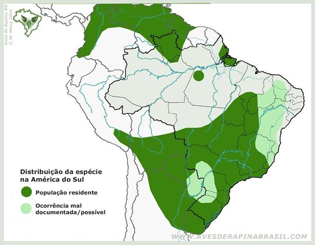

Jacurutu
.jpg)
Nome científico:(Bubo virginianus Gmelin, 1788)
Nome comum:Jacurutu
Classificação biológica:
Domínio: Eukaryota.
Reino: Animalia.
Filo: Chordata.
Classe: Aves.
Ordem: Strigiformes.
Família: Strigidae.
Gênero: Bubo.
Espécie: Bubo virginianus.
Nutrição:Carnívoro.
Hábitos alimentares:Alimenta-se principalmente de pequenos mamíferos, como roedores (ratos, esquilos), coelhos, morcegos e outros pequenos animais. Também caça aves menores, répteis, anfíbios e, ocasionalmente, insetos. É um predador oportunista e pode atacar presas maiores quando necessário.
Morfologia do corpo:É uma das maiores corujas das Américas, com comprimento que varia entre 45 e 63 cm, e envergadura que pode chegar a 1,5 m. Possui um corpo robusto e forte, com asas largas e arredondadas. Sua cabeça é grande e arredondada, com "orelhas" (penas auriculares) proeminentes.
Comportamento:
Principais Presas:Roedores ratos, esquilos, coelhos, morcegos, aves menores como pombos e outras corujas, répteis lagartos e cobras, anfíbios sapos e rãs e, ocasionalmente, insetos grandes.
Principais Predadores:Aves de rapina maiores, como águias e falcões, e mamíferos carnívoros, como raposas e guaxinins, que podem atacar os ovos ou filhotes nos ninhos.
Locais habitados
Distribuição:Encontrada em Todos os Biomas do Brasil
Habitat:O jacurutu é altamente adaptável e pode ser encontrado em uma variedade de habitats, incluindo florestas, pastagens, campos, desertos, regiões montanhosas e áreas urbanas.
Reprodução:O período de reprodução varia conforme a localização geográfica, mas geralmente ocorre no final do inverno e início da primavera. Os ninhos são feitos em árvores, cavidades rochosas ou mesmo em estruturas humanas abandonadas. A fêmea põe de 1 a 4 ovos, que são incubados por cerca de 30 a 35 dias. Os filhotes ficam no ninho por aproximadamente 6 semanas, sendo cuidados por ambos os pais. Eles começam a voar e a se dispersar entre 10 e 12 semanas após a eclosão.